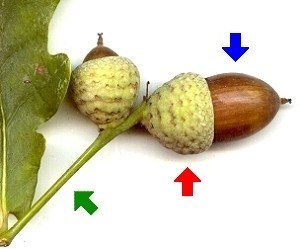
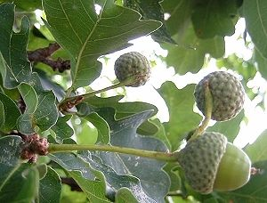

|
| Die Früchte heißen Eicheln. Sie werden im September reif.
Die Eicheln sitzen in einem Fruchtbecher, der wie eine Mütze aussieht.
Der Fruchtstiel ist sehr lang.
 |  Eicheln werden vor allem von Wildschweinen gefressen.
In Notzeiten haben Menschen aus Eichelmehl Brot gebacken.
|